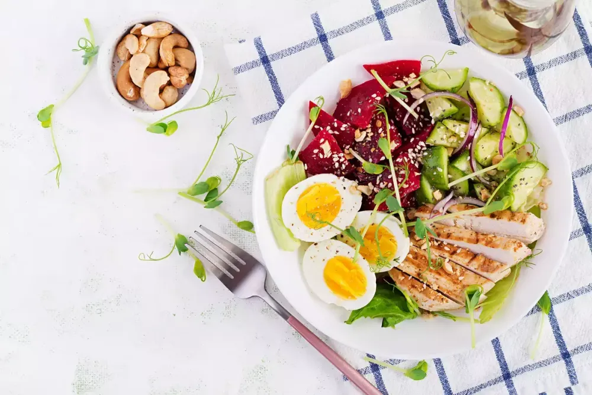

Почему в коде ниже return false не работает? Браузер переходит по указанной ссылке, но нам этого не нужно. Как поправить?
function handler() {
alert("...");
return false;
}
браузер откроет w3.org
браузер откроет w3.org
function handler() {
event.preventDefault();
return false;
}
Сделайте так, чтобы при клике на ссылки внутри элемента id="contents" пользователю выводился вопрос о том, действительно ли он хочет покинуть страницу, и если он не хочет, то прерывать переход по ссылке. Так это должно работать:
Детали:
contents.addEventListener('click', (event) => {
const a = event.target.closest('a');
if (!a) return;
const goAnotherPage = confirm(`Leave for ${event.target.innerHTML}?`);
if (!goAnotherPage) {
event.preventDefault();
alert('ok, sidi tut zopa')
}
});
Создайте галерею изображений, в которой основное изображение изменяется при клике на уменьшенный вариант.

const largeImg = document.querySelector('#largeImg');
thumbs.addEventListener('click', (event) => {
event.preventDefault();
const a = event.target.closest('a');
if (!a) return;
largeImg.src = a.href;
largeImg.alt = a.title;
})
{kind=link}
{kind=link}
{kind=link}
{kind=link}
{kind=link}